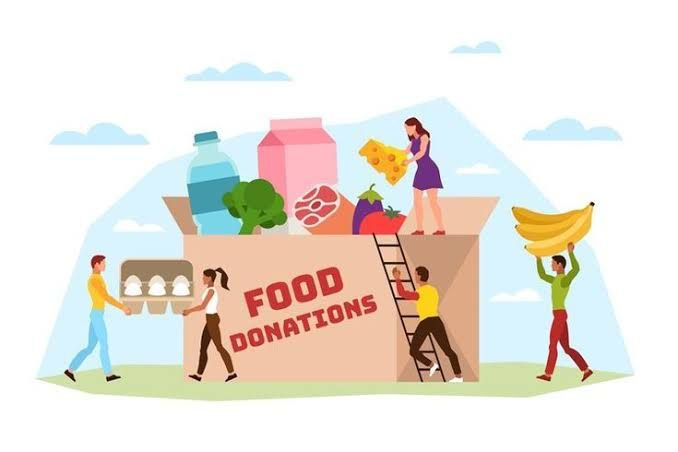
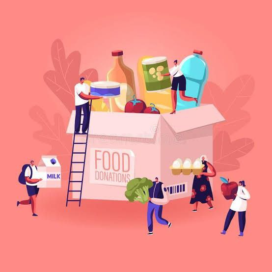
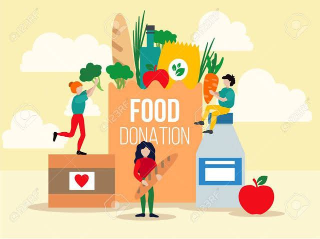

Many people in india are still fighting to have one good meal per day. On other hand, in restaurants and hotels, where foods usually get left over, are getting wasted in dustbins and trashes because of not knowing what to do with that. This ngo's only aim is to solve this problem. We are a small initiative with hopes of bigger changes. We take left over food from restaurants, and collect details about who needs food(such as ashrams and oldage homes) and delivers the food to them by their door step. We are completely funded by personal interest of public and few other organisations and buisness groups. Join your hands with us,and we'll feed the needy one by one and progress through no-hungry india
  